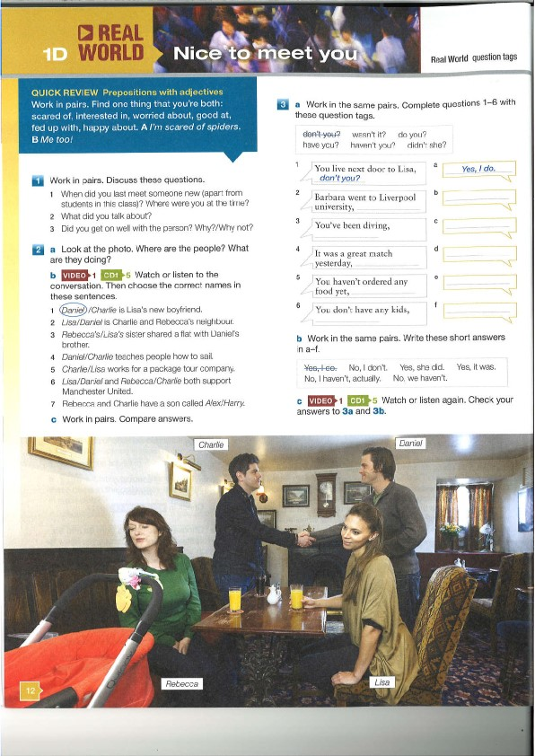
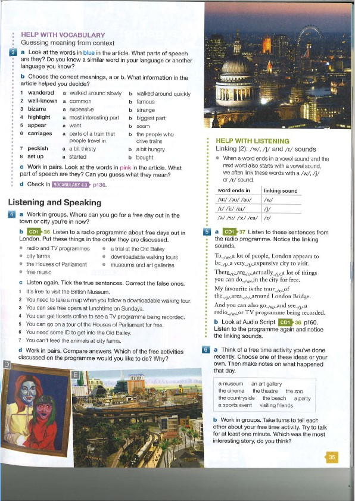

General English Level 3 CD Tracks for After-class Learning
Table of contents
- CD1 Track 2 page 7
- CD1 Track 3 page 9
- CD1 Track 5 page 12

- CD1 Track 6 page 13
- CD1 Track 7 page 13 (same page as Track 6)
- CD1 Track 8 page 13 (same page as Track 6)
- CD1 Track 9 page 14
- CD1 Track 10 page 15
- CD1 Track 11 page 15 (same page as Track 10)
- CD1 Track 12 page 17
- CD1 Track 14 page 18
- CD1 Track 17 page 21
- CD1 Track 20 page 23
- CD1 Track 27 page 28
- CD1 Track 29 page 29
- CD1 Track 30 page 31
- CD1 Track 32 page 33
- CD1 Track 37 page 35

- CD1 Track 39 page 37
- CD1 Track 40 page 37 (same page as Track 39)